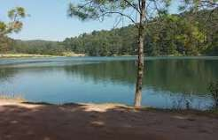
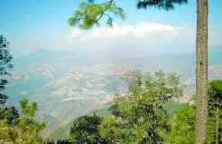

La Laguna Negra es un pequeño cuerpo de agua rodeado de un espeso bosque de pino y encino, ubicado en la zona boscosa cercana a Valle de Bravo y Colorines (en los límites con Zacazonapan) en el Estado de México. Se encuentra dentro del área rural de Pinal del Marquesado, una comunidad de montaña a 2,380 m de altitud, rodeada de bosques y cerros como El Pinal (2463 m) y El Astillero (2534 m).

El Mirador El Pinal es un punto panorámico natural ubicado en la localidad de Pinal del Marquesado, en los límites entre los municipios de Valle de Bravo y Otzoloapan, Estado de México. Pinal del Marquesado está a 15 km de Valle de Bravo (aprox. 1 hora en auto) , lo que lo convierte en una escapada accesible desde tu ubicación en Valle de Bravo.
Algunas rutas para llegar a este lugar son: La ruta mas facil es desde Valle de Bravo pasando por Avándaro hasta Laguna Negra, en Pinal del Marquesado. La ruta de referencia es: Salir de Valle de Bravo hacia Avándaro. Continuar por la zona de Avándaro y Cerro Gordo. Seguir hacia Pinal del Marquesado. Desde ahí continuar hacia Laguna Negra